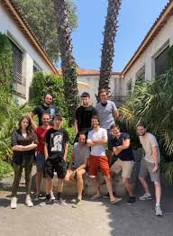

Connect'Terre est une association à but non lucratif qui œuvre pour connecter les zones enclavées à Internet, afin de favoriser les liens sociaux, l'accès à l'information et aux services essentiels.
Qui sommes-nous ?

Notre histoire
Créée en 2023 par un collectif de passionnés de technologies et de solidarité, l'association a vu le jour après un voyage en région isolée où l'absence de connexion empêchait les habitants de rester en lien avec leurs familles. Depuis, nous œuvrons pour que chaque foyer ait un accès au numérique, peu importe la localisation.